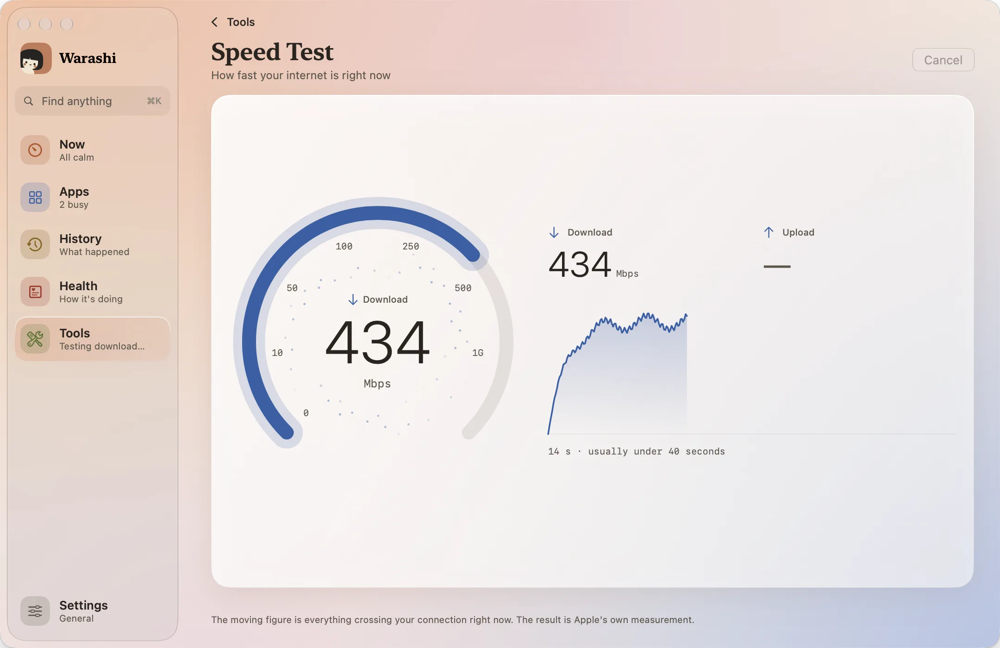
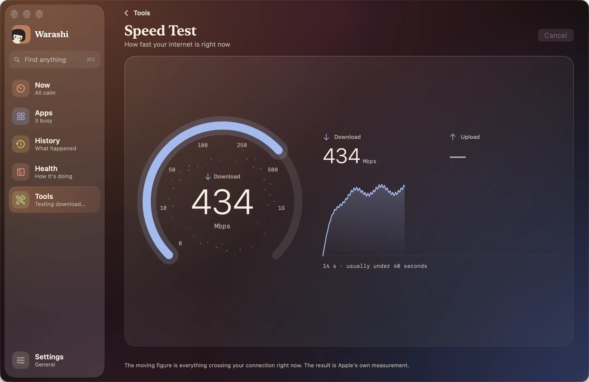

Je Mac heeft een goede snelheidstest ingebouwd, gemaakt door Apple. Zo gebruik je hem, en wat de resultaten echt betekenen.
1. Voer Apples test uit
Open Terminal (Programma's › Hulpprogramma's), typ networkQuality en druk op Return. Het duurt ongeveer een minuut en toont dan je upload- en downloadcapaciteit en de reactiesnelheid van je verbinding.
2. Wat de cijfers betekenen
- Download en upload zijn hoeveel je verbinding per seconde kan verplaatsen, in megabit. Download telt voor streamen en webpagina's; upload telt voor videogesprekken en back-ups.
- Reactievermogen is hoeveel heen-en-weerrondes je verbinding in een minuut aankan terwijl hij druk is. Hoger is beter. Een snelle verbinding met een laag reactievermogen is de reden dat een videogesprek kan haperen terwijl iemand anders downloadt.
- Latentie bij rust is hoe lang een antwoord duurt als er verder niets gebeurt.
3. Een resultaat waar je op kunt vertrouwen
- Pauzeer eerst grote downloads, back-ups naar de cloud en streaming.
- Een VPN verlaagt het resultaat meestal, dus zet hem uit om de verbinding zelf te testen.
- Test op wifi dicht bij je router en daarna vanaf waar je meestal zit: het verschil vertelt je of het probleem je wifi is of je internet.
- Doe het twee of drie keer. Eén resultaat is maar een momentopname.
4. Let op je gegevens
Een snelheidstest verplaatst echte gegevens, wat op een snelle verbinding 2 GB of meer kan zijn. Doe hem liever niet op een mobiele hotspot of met een beperkt abonnement.




Warashi doet dit voor je. Snelheidstest draait de eigen test van Apple met één klik en toont je snelheid live op een wijzerplaat. Je kunt de pagina verlaten terwijl hij loopt en hij bewaart je laatste paar resultaten om te vergelijken. Download de gratis bèta →